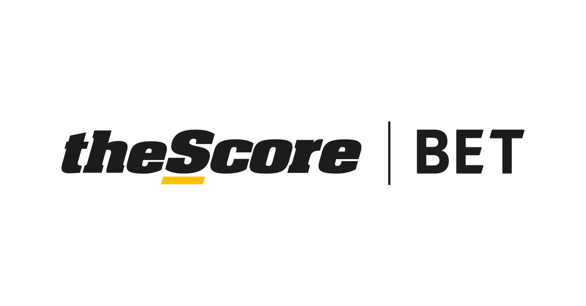
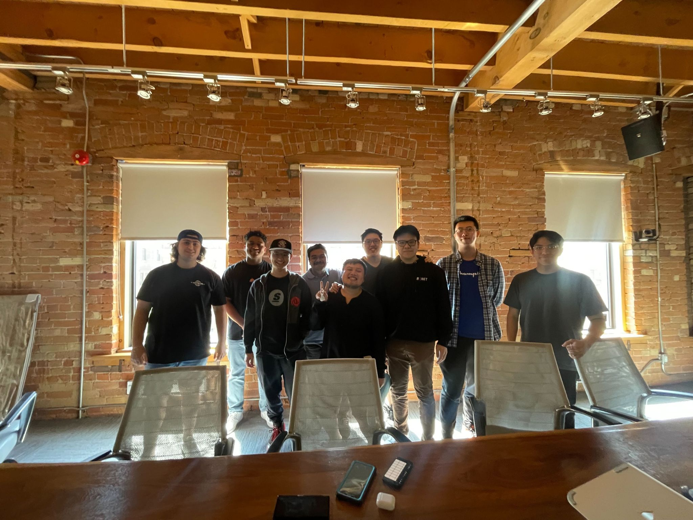
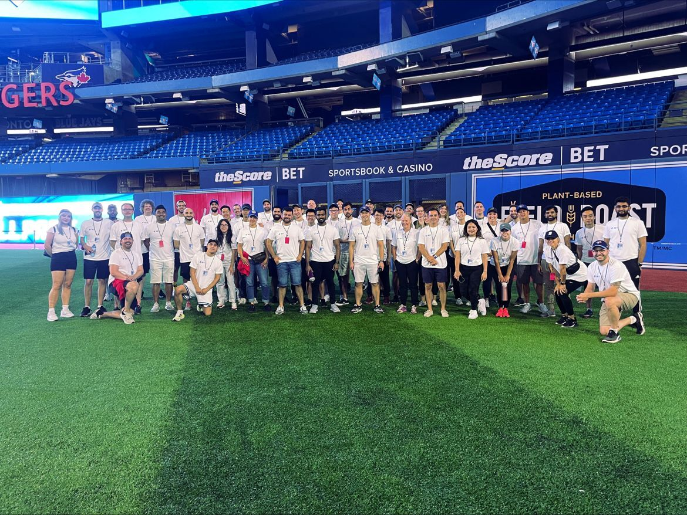

Score Media and Gaming Inc. empowers millions of sports fans through its digital media and sports betting products. Its media app ‘theScore’ is one of the most popular in North America, delivering fans highly personalized live scores, news, stats, and betting information from their favorite teams, leagues, and players. The Company’s sports betting app ‘theScore Bet’
During my first work term, I was a QA Analyst on the
Promotions team, working on theScore Bet. The journey was a great experience
as I was surrounded by an amazing environment of positive and like-minded
individuals, while having the opportunity to learn life long goals and skills.

What is theScore?
Interesting Facts
- 📺 theScore was originally a Cable TV network in Canada that started in 1997
- 📱 theScore's media app has over 4 million active users across North America
- ⚾ In April 2022, theScore partners with the Toronto Blue Jays as their Exclusive Gaming Partner
My Responsibilities
As a QA Analyst, my main focus was on the delivery of high quality releases that satisfied product requirements to meet user expectations. Some of my work includes:
- Creating document test plans, test cases and utilize validation techniques for application functionality
- Participating in bug prioritizing, priority assessment and coverage tracking of reported bugs within the defect tracking system
- Communicating with product, design and executive teams through reports to identify and solve quality issues
Goals
My main goal at theScore as a QA Analyst was to improve the quality of the releases and products for theScore Bet. As such, some of my objectives included:
- Writing documents and test cases to improve overall coverage and functionality within the promotions service
- Using Jira to participate in debugging and bug tracking within TSB clients and other applications
- Planning and executing test plans to ensure objectives are met
- Understanding the product life cycle, including planning, developing and release stages
- Understanding other areas of software development, including product, design and development teams across theScore organization
- Getting involved in people & culture life at theScore, including co-op projects and volunteer opportunities
April 2022
In April I came across an open position for a QA Analyst at theScore. It was extremely busy during this time as I was interviewing for several other companies as well as finishing the last of my exams for the school year. After applying, I was reached out a week later where I was offered two interviews. The interview process was smooth as I had the opportunity to demonstrate my skills. Later that day, I had received a call where I was offered the position. The onboarding process was fairly quick as I provided with the neccessary equipment to start the following week.
May 2022
During the first couple of days at theScore, there was a lot of information to cover during my onboarding, including documents, architecture, services, and different software tools. At first it was overwhelming, however everybody was extremely helpful which made learning a lot easier. I mainly spent the first couple of weeks playing around with the TSB app, as well as understanding the application for the promotions service.
July 2022 - December 2022
For the next couple of months, I worked on different tickets for various products. I found it extremely motivating to continue testing these new features knowing that they will be used on a daily basis. July was a very successful month since it was the launch of theScore's in-house tech stack which enhanced the markets and betting capabilities.
Near the end of July, I had the opportunity to present a co-op project to the Sr. Leadership team, including the CEO, Directors and HR at theScore. Our project was based on a resource that would be used to target new employees that were interested in applying to theScore. We decided to create a prototype website to illustrate theScore's culture; theScoreStories which talks about theScore including individual stories from current co-op students.
Fast forward to August, theScore had a special volunteer event with partnership with the Blue Jays Foundation. Alongside 100+ theScore employees, we had the opportunity to host and lead many games and activities for athletes of all ages for the annual Challenger Baseball National Jamboree.
December being the last month of the year meant for small releases in preparation for the holiday break and New Year. Looking back at the last several months, I had worked on a lot interesting projects/products. Furthermore, I was able to achieve all of my learning goals. From signing off on tickets, to performing neccessary adhoc testing to watching these features come to life, it was an admirable experience.
Conclusion
Working at theScore for my first co-op term was a great experience. I had the opportunity to learn a lot the sports betting industry, including what the products and architecture were at theScore. Simarily, I learned a lot about quality assurance, performing quality testing, problem solving and identifying critical bugs within the workflow. Some of my favourite work included promotions feature work on the Viva/Vegas and Parlay+ launch. Both were very large milestones that took an all-round amazing effort across all teams within the organization.
Although this is the end of my first work term, I will miss my colleagues and my time here working at theScore. However, I am excited for my future work terms as I want to continue expanding my skills and knowledge in software development.
Acknowledgements
- 🥇 Special thanks to Charlotte and Jamie, my supervisor and manager at theScore who gave me feedback to achieve my learning goals as well as helping to answer any work related questions I had
- 🥈 I would also like to thank everyone on the Promotions team for being amazing people to work with, from Vegas launch to Parlay+ it was a great experience to work with everybody
- 🥉 Lastly, I would like to thank Michelle for the smooth hiring process, as well as organizing projects and activities for the co-op students at theScore
Highlights

theScore Co-op Project Summer 2022

National Jamboree '22 - Blue Jays Foundation
 Promotions Team Event
Promotions Team Event
Promotions Team Event